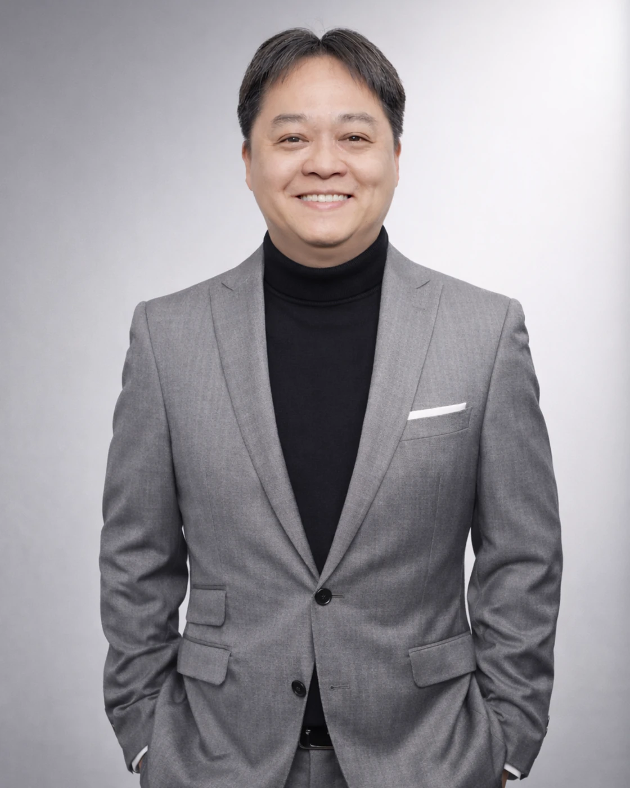

Vehicular trust and privacy
Enhancing C-V2X with Blockchain and Zero-Knowledge Proofs for Improved Privacy, and Trustworthiness, IEEE Transactions on Vehicular Technology, 2026.
Electrical and Electronic Engineering • wireless systems • smart mobility
Head of Department and Associate Professor
Electrical and Electronic Engineering
University of Nottingham Ningbo China
I am an academic in Electrical and Electronic Engineering, and my work centres on mobile and satellite communications, intelligent wireless systems, and smart mobility. In recent years, I have focused on 5G/6G, C-V2X, IoT, satellite navigation, and connected transport systems.

At UNNC since 2015
Teaching, research, leadership, and professional service in Electrical and Electronic Engineering.
My interest in engineering began with a simple curiosity about how communication systems help people, devices, and infrastructure stay connected across distance. That curiosity led me from the University of Hertfordshire, where I studied Electrical and Electronic Engineering, to the University of Bradford for an MSc in Personal, Mobile and Satellite Communications, and later to Multimedia University in Malaysia, where I completed my PhD in Mobile Communications.
I joined the University of Nottingham Ningbo China in October 2015. Since then, I have had the opportunity to contribute in a range of roles across teaching, research, and academic leadership, including as Visiting Teaching Fellow, Assistant Professor, Associate Professor, Director of the Innovation Lab, Faculty Director of Admission and International Relations, and now Head of Department in Electrical and Electronic Engineering.
My research sits mainly in mobile and satellite communications, C-V2X and vehicular networking, the Internet of Things, satellite navigation and positioning, and artificial intelligence for wireless systems. At present, much of my work looks at how 5G/6G, satellite communications, and intelligent networked systems can support future transportation and smart-city applications.
Alongside research, I care deeply about teaching, supervision, and professional service. I try to approach academic leadership with care, consistency, and a strong sense of responsibility to students, colleagues, and the wider profession. I am a Chartered Engineer, a Senior Member of the IEEE, a Member of the IET, and a Senior Fellow of the Higher Education Academy.
I have been part of the University of Nottingham Ningbo China since 2015, with work spanning teaching, research, and academic leadership.
I have served as Head of Department in Electrical and Electronic Engineering since 2021.
My academic training has taken me through the University of Hertfordshire, the University of Bradford, and Multimedia University.
CEng, SMIEEE, MIET, and SFHEA reflect my continuing commitment to engineering practice and engineering education.
My work brings together next-generation connectivity and intelligent infrastructure. I am especially interested in how communication systems can become more reliable, more adaptive, and more useful in real-world settings.
In practice, this often means supporting doctoral training, encouraging interdisciplinary collaboration, and linking engineering education with the needs of connected transport, smart cities, and future wireless systems.
A few selected publications show the kinds of questions I have been exploring in wireless communications, mobility optimisation, vehicular networking, trust, and intelligent systems.
Enhancing C-V2X with Blockchain and Zero-Knowledge Proofs for Improved Privacy, and Trustworthiness, IEEE Transactions on Vehicular Technology, 2026.
Speed-Aware Asynchronous Deep Reinforcement Learning for Joint Handover Parameter Adaptation in 5G and Beyond Networks, IEEE Communications Letters, 2026.
Navigating the Road Ahead: A Comprehensive Survey of Radio Resource Allocation for Vehicle Platooning in C-V2X Communications, IEEE Communications Surveys & Tutorials, 2024.
Autonomous Handover Parameter Optimisation for 5G Cellular Networks Using Deep Deterministic Policy Gradient, Expert Systems with Applications, 2024.
Teaching has always been one of the most important parts of my academic life. I value clarity, careful guidance, and helping students grow in confidence as engineers.
I try to create a learning environment that is rigorous but approachable, connecting theory with practice and encouraging students to think carefully, communicate clearly, and solve problems with integrity.
Alongside teaching and research, I contribute to the wider academic and professional community through external examining, accreditation, and professional registration work. These roles allow me to support standards, quality, and the continuing development of engineering education.
I see this work as one way of giving back to the profession and helping maintain thoughtful, fair, and internationally relevant engineering standards.
This section is ready to grow into a fuller supervision page over time. It can hold information on current students, completed supervision, student opportunities, and selected student work.
I would like this part of the site to hold a few selected talks, lectures, or short research videos. I have added ready-made placeholders below so YouTube embed code can be dropped in later without redesigning the page.
A good place for a keynote, invited talk, or public lecture.
Useful for a short research overview, lecture clip, or interview.
You can find more about my work through the public profiles below. I have kept this page deliberately simple, so these links are the easiest starting point.